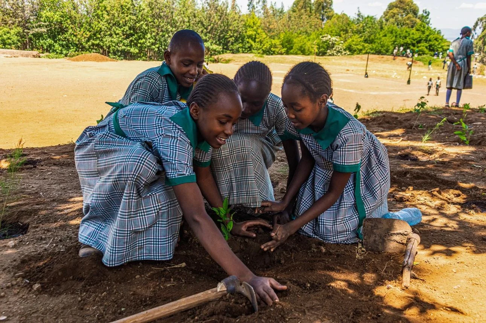
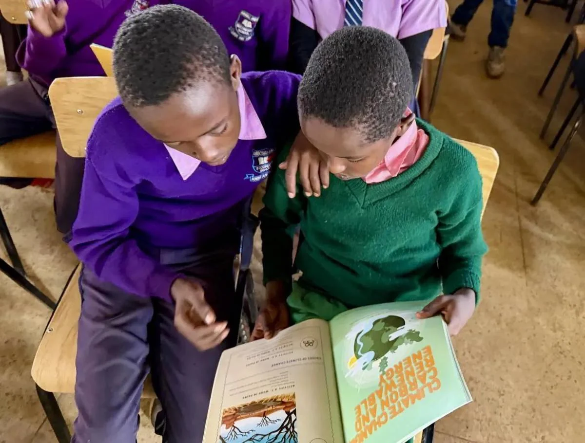
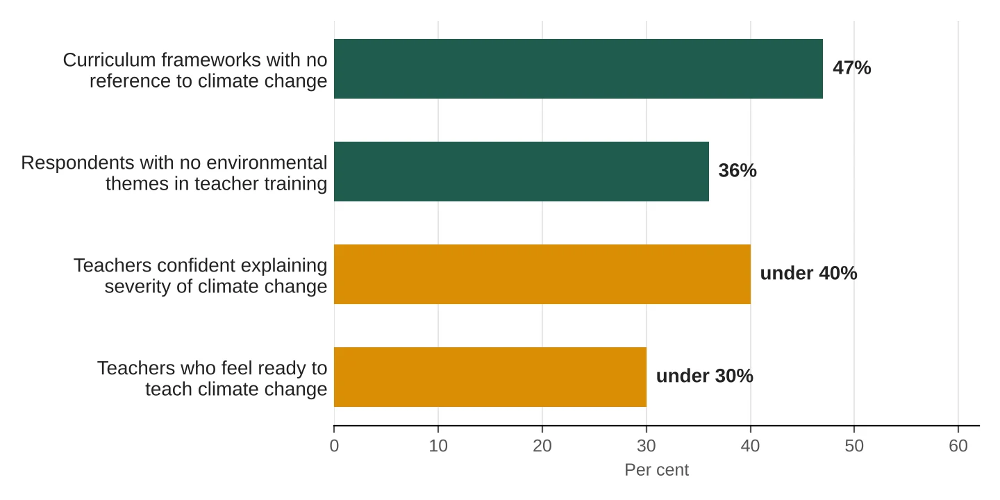
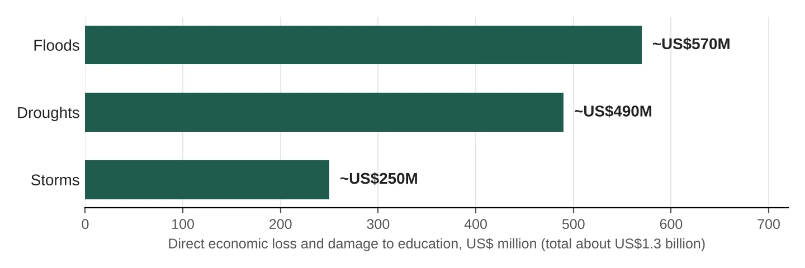
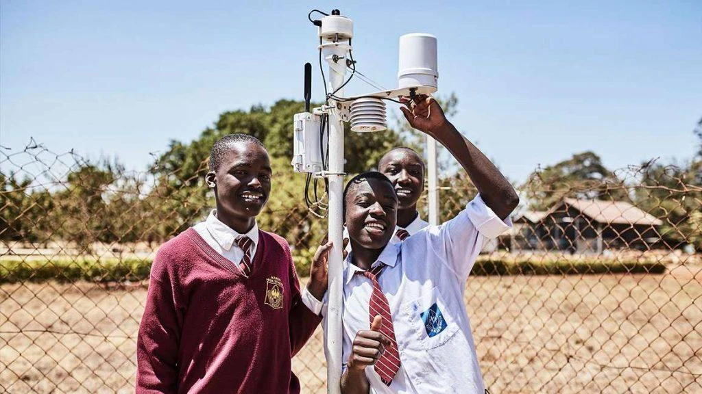
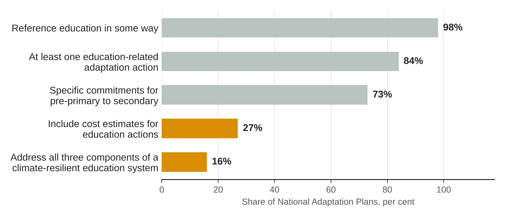
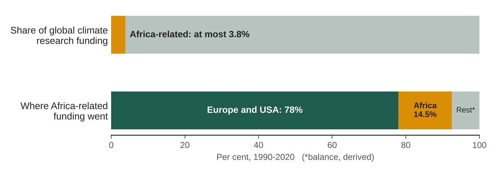

- Curricula: Nearly half (47%) of national curriculum frameworks reviewed worldwide make no reference to climate change.
- Teachers: Fewer than 30% of surveyed teachers feel ready to teach climate change.
- Schools: In 2024, floods disrupted schooling for an estimated 12 million students in West and Central Africa and 8 million in Eastern and Southern Africa.
- Finance: Only about 1.5% of global climate finance reaches the education sector.
- Evidence: Africa-related topics receive at most 3.8% of global climate research funding, and only 14.5% of that reaches African institutions.

1. Why This Matters Now
Most African countries contribute little to global greenhouse gas emissions, yet their schools are on the climate front line. UNICEF reports that over 107 million African children are already out of school and that climate-related disruptions in 2024 put a further 20 million at risk of dropping out (UNICEF, 2025). In Eastern and Southern Africa alone, more than 700 extreme weather events since 2005 affected over 330 million people. Between 2005 and 2024 they caused about US$1.3 billion in direct damage to education and disrupted the learning of 130 million children (UNICEF, 2026).
Climate literacy is also low. An analysis of Afrobarometer surveys in 33 countries found an average national climate literacy rate of 37%, against generally over 80% in Europe and North America, with education serving as the strongest predictor (Simpson et al.). Education systems are therefore both exposed to climate change and essential to responding to it. Each section below sets out the empirical evidence for one structural gap and a targeted recommendation for governments.
2. The Five Structural Gaps
Gap 1: Curricula That Do Not Teach Climate Change
Evidence. A UNESCO review of 100 countries found that 47% of national curriculum frameworks made no reference to climate change (UNESCO, 2021). Where it is included, delivery is uneven: in a UNESCO study of eight countries, 69% of surveyed teachers said environment, sustainability, and climate topics were in their school curricula, but only 50% included them in their teaching (UNESCO, 2024). Inequality within countries compounds this. Across 394 African sub-national regions, 8% had climate literacy below 20%, and rates in Nigeria ranged from 71% in Kwara to 5% in Kano (Simpson et al.). The curriculum figures are global samples, not African averages; Africa-specific curriculum audits remain scarce (see Gap 5).

Recommendation 1: Adopt a National Climate Education Framework
Adopt a national climate education framework that sets minimum learning outcomes for each grade level, runs across science, geography, civics, and technical training, and is localised to national hazards and indigenous knowledge. Kenya and Somalia have already pledged curriculum integration in their NDCs (UNICEF, 2026). Governments should turn such pledges into funded, time-bound reforms, in line with the Greening Education Partnership aim to at least double the current ~45% of countries that include climate education in curricula (UNESCO).
Gap 2: Teachers Who Are Not Prepared
Evidence. UNESCO's teacher survey found fewer than 40% were confident explaining the severity of climate change, and only about one-third could explain its local effects (UNESCO, 2021). A later study reports that under 30% feel ready to teach it (UNESCO, 2024), and about 36% of respondents reported no environmental themes in any teacher training (Down To Earth). African evidence points the same way. In a survey of 120 geography teachers in Gauteng, South Africa, only 38% had received training in education for sustainable development, though over 95% judged it important; this is a small, single-province sample and indicative only (Gauteng study). Brookings research in Kenya, Malawi, Rwanda, South Africa, and Zimbabwe found teachers citing high pupil ratios, multi-subject loads, and a lack of specialist climate training (Brookings).

Recommendation 2: Institutionalise Pre-Service & In-Service Teacher Training
Build climate education into pre-service teacher training college curricula and fund short in-service programmes, aiming for at least one trained lead teacher in every school—the Greening Education Partnership benchmark (UNESCO). Pair training with ready-to-use, locally contextualised lesson materials, including offline and vernacular formats, alongside realistic workload allowances.
Gap 3: Schools That Are Not Climate-Resilient
Evidence. UNICEF estimates that floods disrupted schooling for about 12 million students in West and Central Africa and 8 million in Eastern and Southern Africa in 2024 (UNICEF, 2025), and more than 2 million learners in Kenya lost learning time during the March to May rains (UNICEF Kenya). In low-income countries, affected students lose on average 18 school days a year, equal to 10% of an academic year. Heat matters too: in Ethiopia, ten additional hot days in a year are linked to roughly 2.3% lower academic results. Impacts are unequal: during Kenya's 2024 floods, girls' enrolment fell 10.5% against 7.1% for boys. Prevention costs far less than repair. In Mozambique, resilient construction standards raise upfront costs by roughly 10–25% but can avoid reconstruction and emergency spending two to fourteen times higher, and every US$1 invested in resilient education infrastructure yields US$2–13 in avoided direct losses (UNICEF, 2026).


Recommendation 3: Mandate Climate-Resilient School Design & Hazard Mapping
Make climate-resilient design standards mandatory for all new and rehabilitated schools. Require school-level disaster and heat-response plans, and map every school's hazard exposure in the national education database. Target the highest-risk districts, girls, and learners with disabilities first.
Gap 4: Education Missing from Climate Finance and National Adaptation Plans
Evidence. ClimateandEducation.org, backed by Save the Children, the Green Climate Fund, and the Global Partnership for Education, reports that only 1.5% of global climate finance reaches education (ReliefWeb). Estimates vary with definitions; one 2024 account puts the share as low as 0.03% (IPS). UNICEF found that under 2.4% of finance from key multilateral climate funds supported child-responsive projects, against roughly 6–7% in health. At health's share, education could close the US$97 billion annual SDG 4 financing gap in low- and middle-income countries (UNICEF, 2026).
Planning is also thin. Globally, 74% of the 110 NDCs 3.0 submitted by March 2026 include education commitments. Among National Adaptation Plans (NAPs), 98% mention education, but only 16% address all three components of a climate-resilient education system and only 27% cost their education actions (UNICEF, 2026, citing NAP Global Network).

Recommendation 4: Cost Education in NAPs/NDCs & Mobilise Multilateral Climate Funds
Create a standing inter-ministerial task team of education, environment, and finance ministries to cost education actions in NAPs and NDCs and prepare bankable proposals for the Green Climate Fund, Adaptation Fund, and Fund for responding to Loss and Damage. Where fiscal space is tight, consider debt-for-education swaps and pre-arranged risk financing such as parametric insurance, structured so they do not add to debt vulnerability (UNICEF, 2026).
Gap 5: Weak Data and Too Little African-Led Research
Evidence. Between 1990 and 2020, at most 3.8% of global climate research funding went to Africa-related topics. Of that, 78% went to institutions in Europe and the United States and only 14.5% to African institutions (IPCC AR6 summary, Stellenbosch University; IPCC Figure 9.3). For over 75% of African countries, 60–100% of climate publications on them had no local author (Stellenbosch University). Education data share the problem: UNICEF notes that global data on climate-related school disruptions are limited and its estimates conservative (UNICEF, 2025), and continent-wide literacy evidence rests on 2016–2018 surveys (Simpson et al.). Without reliable data, ministries cannot set baselines, target schools, or show funders verified results.


Recommendation 5: Integrate Climate Indicators into EMIS & Fund African-Led Research
Add climate indicators (hazard exposure, days of schooling lost, infrastructure damage, and student displacement) to national Education Management Information Systems (EMIS), disaggregated by sex, disability, and district. Commission a sub-national climate literacy survey every few years, and direct national research budgets and donor partnerships toward African-led studies with local authorship and open access.
3. Priority Actions at a Glance
| Structural Gap | Priority Government Action | Lead Institution(s) | Horizon | Core Indicator |
|---|---|---|---|---|
| 1. Curricula | National climate education framework with minimum grade outcomes | Education Ministry | 1–3 years | Share of grades covered |
| 2. Teachers | Pre-service and in-service training; at least one trained teacher per school | Education Ministry | 1–3 years | Schools with a trained teacher |
| 3. Schools | Mandatory resilient design standards; school hazard maps and emergency plans | Education & Works Ministries | 0–3 years | Schools mapped; school days lost |
| 4. Finance | Costed NAP/NDC education actions; joint inter-ministerial task team; fund proposals | Finance & Environment Ministries | 0–2 years | Climate funds mobilised for education |
| 5. Data & Research | Climate indicators in national EMIS; dedicated funding for African-led research | Education Ministry & Research Councils | 0–1 year | Disaggregated indicators reported |
4. Sequencing and Next Steps
Governments can start immediately without waiting for new external funding: add climate disruption and hazard indicators to existing education data systems (EMIS), convene the joint education-environment-finance task team, and issue interim teacher guidance within the first 12 months. National curriculum frameworks, mandatory resilient school design standards, and fully costed NAP education components can follow within one to three years, while multilateral climate finance proposals and African-led university research partnerships scale over the medium term. Together, these sequenced steps move African education systems from repeated post-disaster recovery toward sustained climate resilience.
Every figure in this brief is drawn from the primary institutional sources listed below. Curriculum, teacher-readiness, NDC, NAP, and global finance figures represent global samples; economic loss, damage, and displacement figures cover Eastern and Southern Africa; and continent-wide climate literacy figures derive from 2016–2018 survey waves. Climate finance estimates vary by accounting definition. The recommendations presented here are independent GNEP Africa policy proposals informed by this evidence.
References
- Brookings Institution. Chalk, courage and climate change: how educators in Eastern and Southern Africa are transforming challenges into action. brookings.edu
- Down To Earth (2021). Half the national curricula worldwide don't mention climate change; most teachers unsure of explaining subject: UNESCO. downtoearth.org.in
- Gauteng Geography Teachers and ESD, Journal of Geography Education in Africa. upjournals.up.ac.za
- IPCC (2022). AR6 Working Group II, Chapter 9, Figure 9.3: Funding for climate research on Africa. ipcc.ch
- Inter Press Service — IPS (2024). Embedding education into climate finance will deliver desired learning, climate action outcomes. ipsnews.net
- NAP Global Network (2025). Education in National Adaptation Plan processes. napglobalnetwork.org
- ReliefWeb. Global platform aims to make education more climate-resilient. reliefweb.int
- Simpson, N. P., et al. Africa's first continent-wide survey of climate change literacy (PreventionWeb). preventionweb.net
- Stellenbosch University (2022). Africa's adaptation to climate change hampered by skewed funding and lack of data. su.ac.za
- UNESCO (2021). Getting every school climate-ready: How science can underpin action. uncclearn.org
- UNESCO (2024). Climate change and sustainability in science and social science secondary school curricula. unesdoc.unesco.org
- UNESCO. Greening Education Partnership: Getting every learner climate-ready. unesdoc.unesco.org
- UNICEF (2025). Learning interrupted: Global snapshot of climate-related school disruptions in 2024. unicef.org | Full text (ERIC)
- UNICEF Kenya (2025). Nearly a quarter of a billion children's schooling was disrupted by climate crises in 2024. unicef.org/kenya
- UNICEF (2026). Protecting children's learning futures: Quantifying climate-related loss and damage in Eastern and Southern Africa. unicef.org/esa